AlibiDesigned and built · 12 min read
A video party game that keeps one player's secret while the whole room plays together.
Alibi is a browser game I designed and built on my own. Everyone watches the same short clip except one player, who gets a different one without being told, and the group has to work out who.
- Role
- Design and build, solo
- Timeline
- October 2026
- For
- 3 to 8 friends playing together over a call
- Platform
- Web, on computers and phones. Needs a running Node server
- Stack
- React 19, Vite, Express 5, Socket.IO, WebRTC, the YouTube embedded player
- Status
- Playable. No permanent public link yet, and no player feedback to share
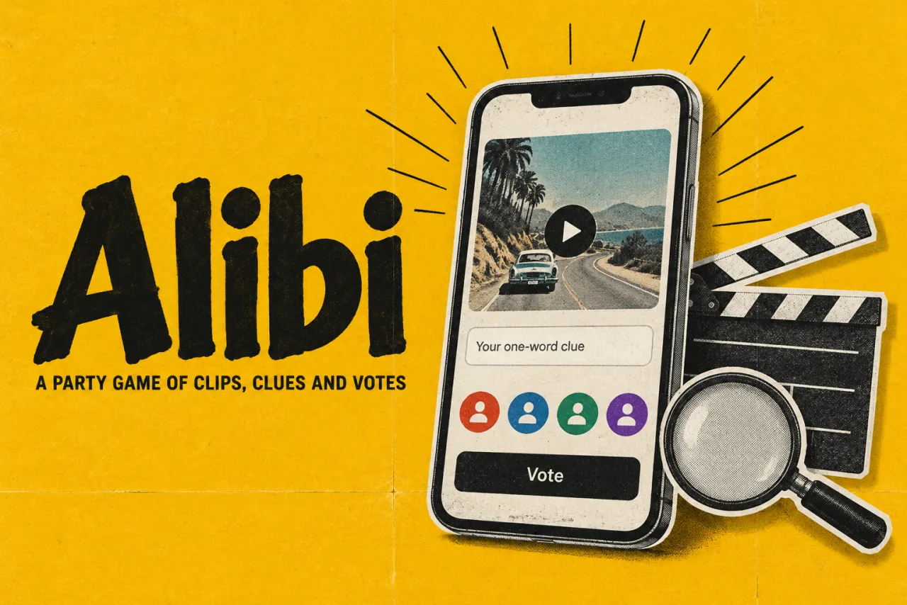
In short
- The problem: an imposter game spoils itself if a clip, a clue or a vote shows up too early, or if the group sits waiting for one player's video.
- What I built: a browser game for 3 to 8 friends. The server sends each player only their own share of the round, through six timed phases, with a clearly labelled solo practice mode.
- The key idea: privacy is decided on the server. A screen cannot leak what it was never sent.
- Where it stands: playable, with 32 automated tests. I prepared it for a seven-player game night, and friends played full rounds on the night. It still has no permanent link.

01 Why I built it
An imposter game falls apart if anyone sees too much, too soon
The idea comes from an imposter game played on a popular YouTube channel. Everyone watches a clip. One person, the imposter, has seen a different but related clip and does not know it. Each player gives one word about what they saw, the group talks, and then everyone votes on who the imposter is.
I wanted to play it with friends on their own devices, over the internet. That means each person needs a private screen, while the group shares one clock. Alibi is my own version. It is not connected to that channel or to YouTube.
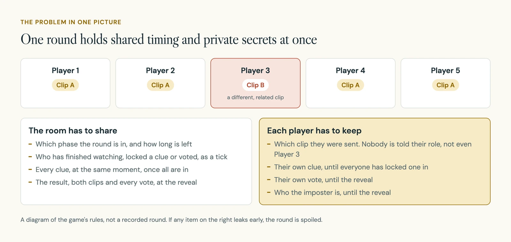
Two things can spoil a round. Something private shows up early, such as one clue before the others are in. Or the game stalls while one person's video loads, and the group waits with no idea why.
02 How it works
A round runs in six phases, and each one has its own clock
A host creates a room and shares the link. Friends join with just a name. There is no sign-up. The host picks a clip pack, the number of rounds (3, 5, 8 or 10), the clip length and the time to talk.
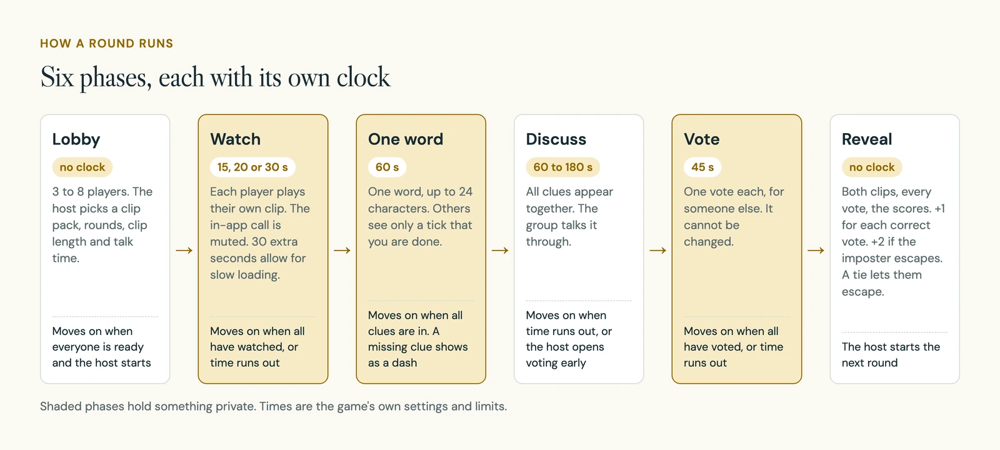
In the watch phase you see a private player with one button. The clip starts at a set point and stops by itself. Then you get one box for one word.
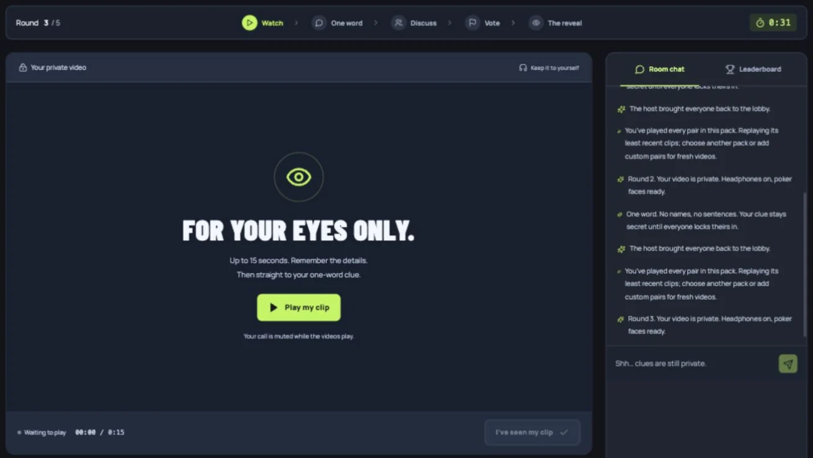
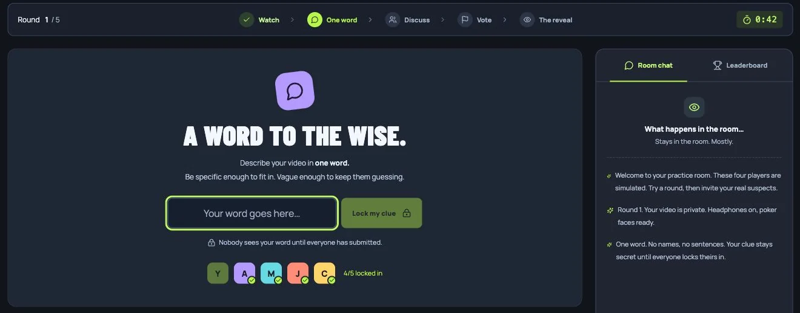
The reveal is where everything held back comes out at once.
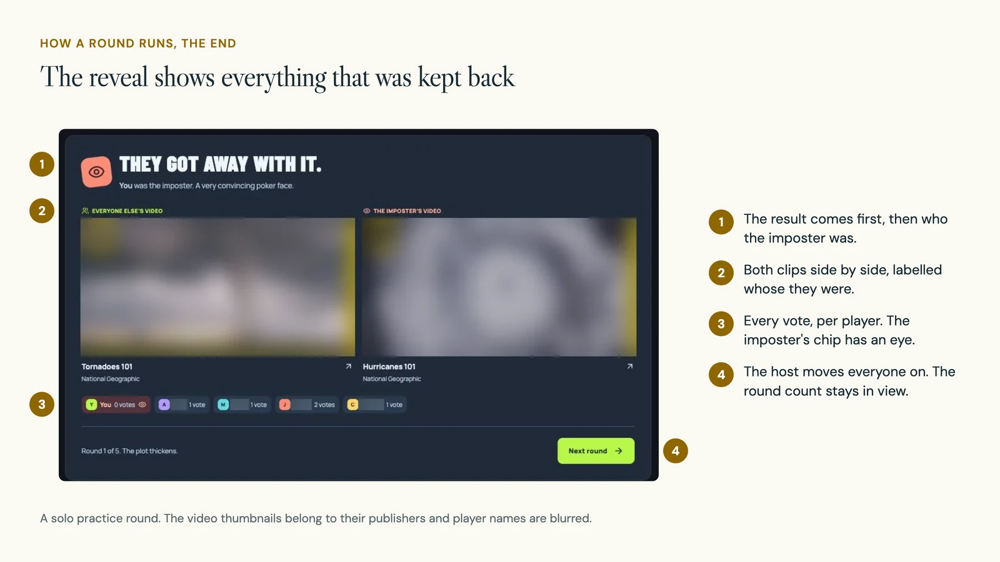
03 Decision 1
Each screen only receives what that player is allowed to know
What you see: your own clip, your own clue, and a tick for everyone else. Nothing on your screen says whether you are the imposter.
In the build: the whole room lives on the server. Before every update, the server builds a separate copy for each player and leaves out anything that player should not have yet. The list of clip pairs never reaches a browser at all.
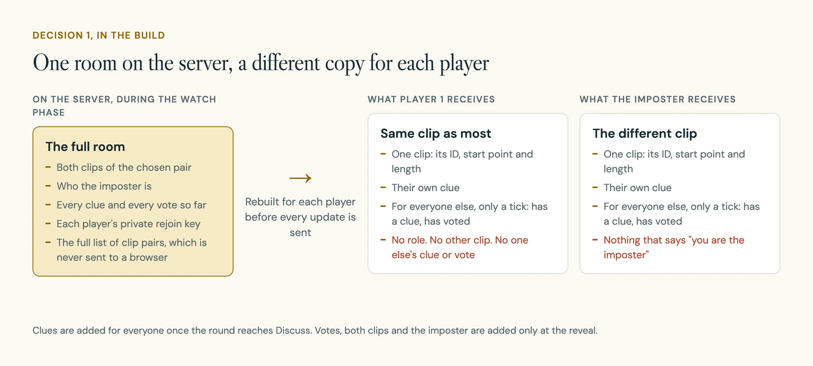
Tests check this directly. One confirms that exactly one player gets the other clip without seeing any roles. Others check that clues appear together, and that a vote cannot be changed or cast for yourself.
04 Decision 2
Practice players are labelled as practice everywhere they appear
What you see: solo practice puts you in a room with four simulated players. They are ready at once, lock in clues and vote, so you can see a whole round alone before inviting anyone.
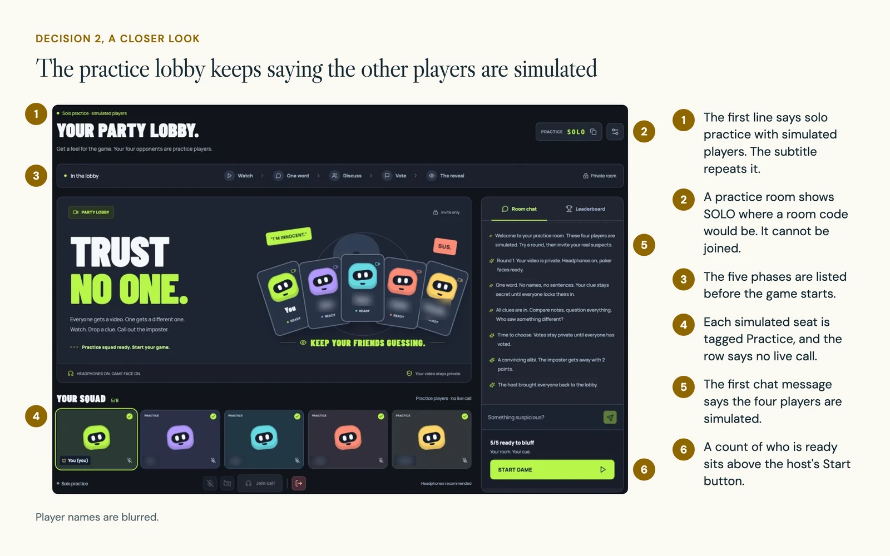
In the build: simulated players are flagged in the room data. Three of them give fixed words and all of them vote at random, which is honest about what they are. Nobody else can join a practice room. If a host leaves a real room, control passes to another real player, never to a simulated one.
05 Decision 3
Clips are short, start at a set point and never repeat back to back
What you see: my first version let a host pick 30, 45 or 60-second clips, with 45 as the default. Each player pressed "I've seen my clip" when they were done.
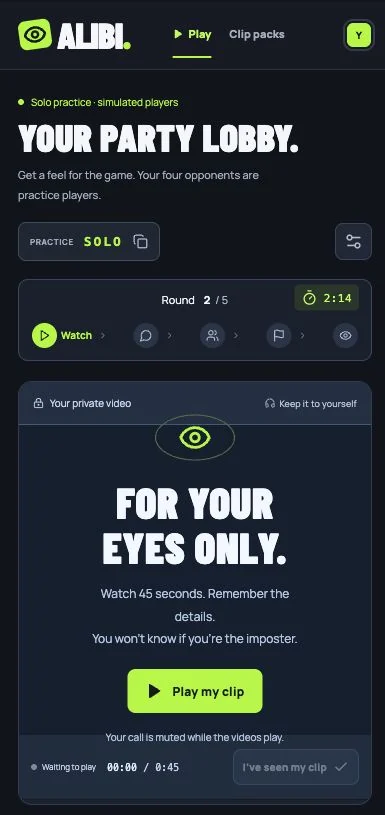
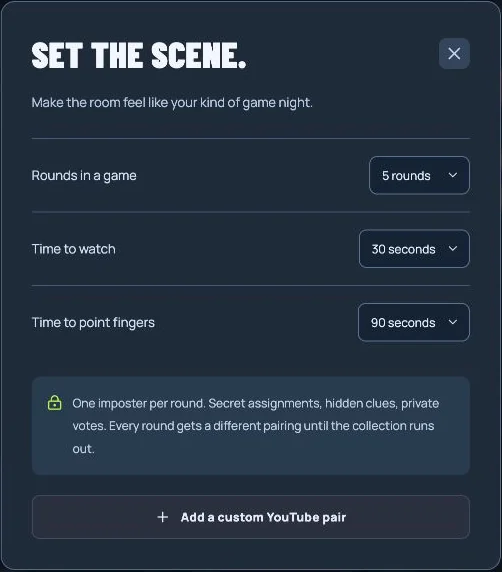
A few hours later I capped clips at 30 seconds, with 15 and 20 as shorter choices. The round now moves on by itself once everyone has watched. One of the rules I wrote for the game is that a round should be quick to understand and replay.
In the build: curated clips start 15 seconds into the source video. YouTube can resume a video where it was last left, so every round loads a fresh player and sets its own start and end. A late signal from the old clip cannot end the new one. Eight tests cover playback alone.
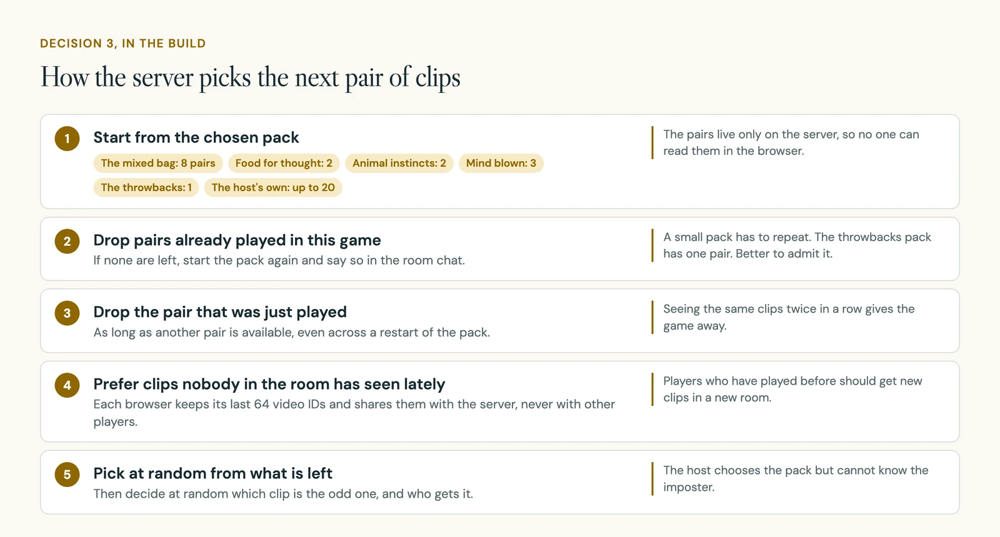
06 Decision 4
A dark game lobby instead of a polite booking page
What you see: my first version used ivory and sage, soft headings and food photos as the hero. It looked like a hotel booking site. I dropped it the same evening, before the first commit, and started again as a game.
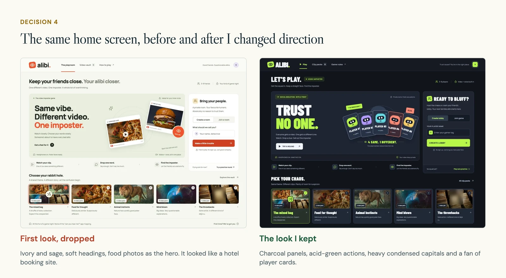
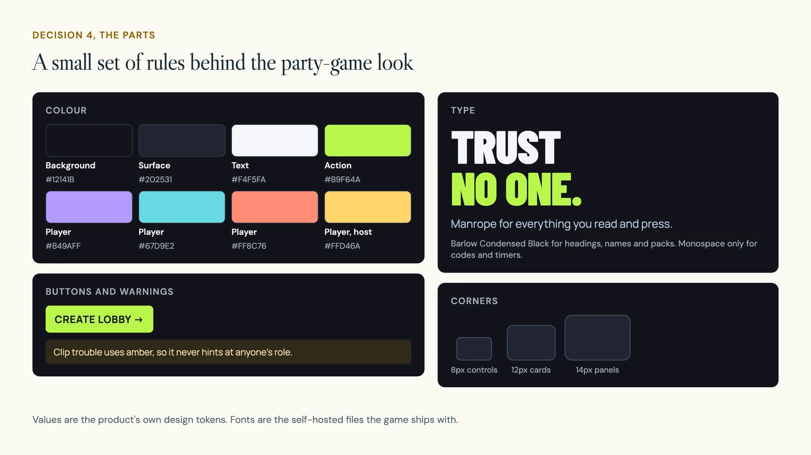
In the build: the player faces are drawn in code, a coloured tile with a dark visor, two eyes and a mouth. They blink every six seconds, and the blink stops for anyone whose device asks for less motion. The card marked with a different clip appears only in the labelled example on the home screen, never on a real player's seat.
On phones the order changes. Create and join come first. Inside a room, the ready and start control sits right under the heading. Text boxes use 16px type so phones do not zoom in when you type.
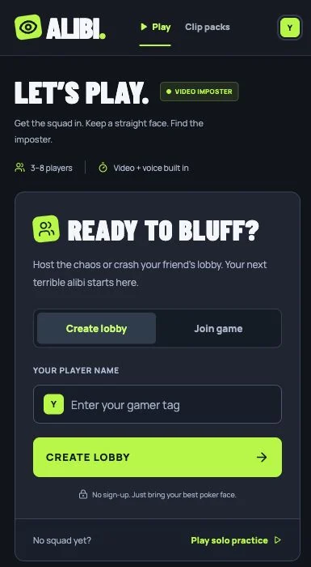
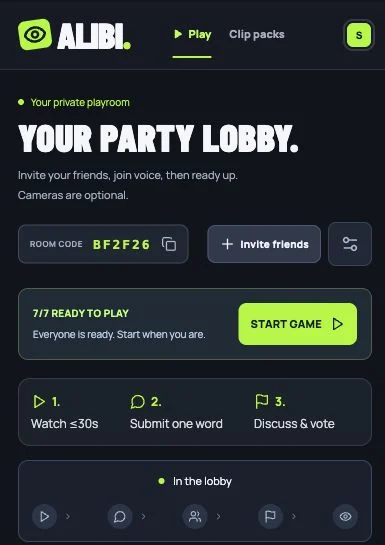
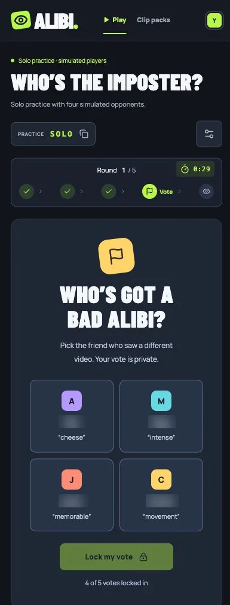
07 Game night
Getting it ready for seven friends on a Teams call
Two weeks later I prepared Alibi for a game night with seven players. The group would talk on Microsoft Teams, not the in-app call. The game cannot mute Teams, so the instructions tell everyone to mute while watching and unmute when the clues appear.
I added a three-step guide to the lobby and clearer headings for each phase.
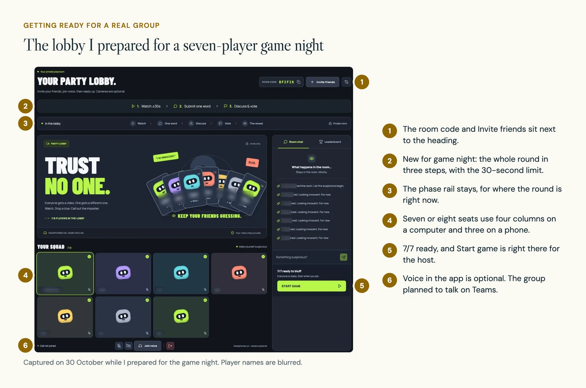
I also listed what could go wrong in the middle of a game, and gave each case an answer inside the game.
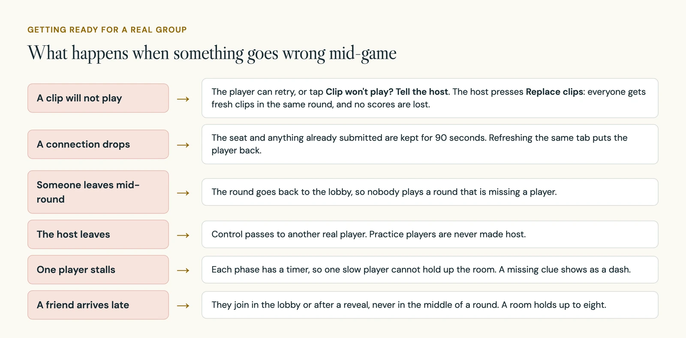
Before the night I checked it end to end. Seven separate clients played a full round through the public link: watching, private clues, discussion, private votes and the reveal. All 16 clip videos were still listed as available that day. For the in-app call, seven test clients with generated camera and microphone feeds connected all 21 pairs between them.
08 The build
One server decides the round, and tests guard the secrets
The server is the only place a round is decided. Browsers send actions, such as "lock my clue", and get back their own copy of the room.
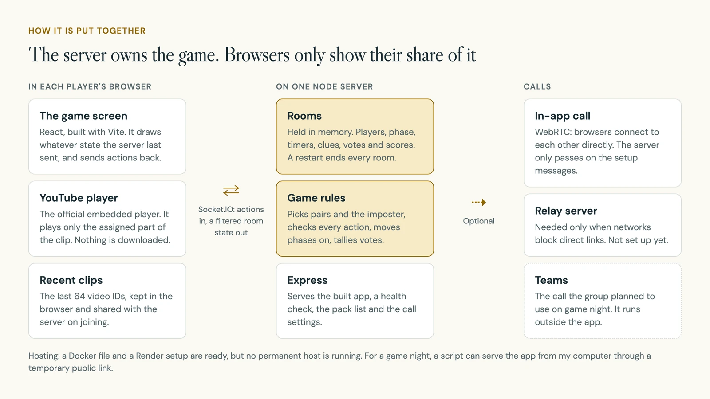
| Part | What I used |
|---|---|
| Game screen | React 19, built with Vite |
| Server | Node with Express 5. Rooms are kept in memory |
| Live updates | Socket.IO, with a separate copy of the room for each player |
| Video | YouTube's official embedded player. Nothing is downloaded or hosted again |
| Optional call | WebRTC between browsers. Voice by default, camera optional |
| Hosting | A Docker file and a Render setup, plus a script for a temporary public link |
- 5
- commits, 16 to 30 October 2026
- 32
- automated tests, all passing at the last recorded run
- 7
- separate clients in the largest full-round test
- 21
- call connections made between seven test clients
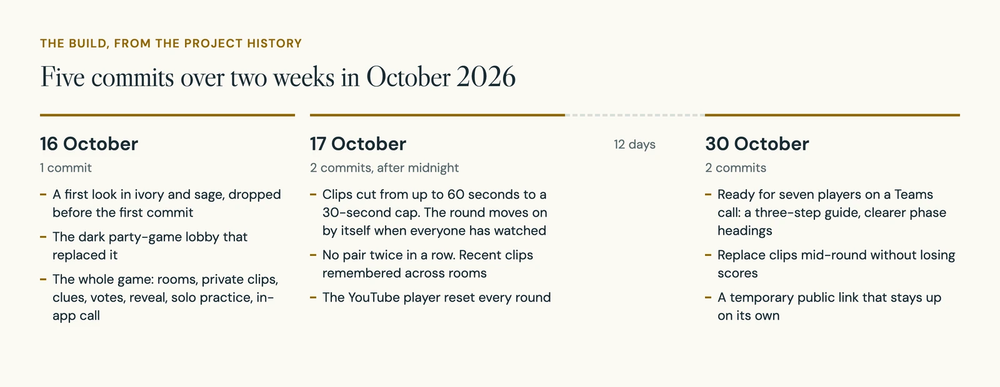
The hardest problems were about time and order, not about the screens.
| Area | What went wrong, and what I changed |
|---|---|
| Old video positions | YouTube could carry over where a video was last stopped, and a late signal from the old clip could end the new one. Each round now gets a fresh player and reloads its own segment. Tests cover seeking, buffering and clips that end early. |
| Repeats | In the first version, when a pack ran out and started over, the pair just played could come straight back. The server now skips it whenever another pair is left. |
| Seven-way calls | Seven cameras need 21 connections, and the setup messages arrive in bursts. Call setup now has its own allowance, so a burst cannot block clues and votes. Camera video is capped at 15 frames a second where the browser allows it. |
| Drop-outs | A player who drops keeps their seat for 90 seconds. One test plays a full round with three clients, reconnects one of them and hands over the host. |
09 Where it stands
Playable from start to finish, with no permanent home yet
Alibi works end to end, in solo practice and in real rooms. It has no permanent public address. For a game night it runs on my computer behind a temporary link, which lasts only while the computer stays on and connected.
These limits are still there:
- Rooms live in the server's memory, so a restart ends every game.
- It runs as one server. More than one would need shared storage for rooms.
- In-app calls across different networks need a relay server, which is not set up.
- Beyond that game night I have no usage numbers.
10 What is next
Watch a real group hit a problem, then give it a permanent home
- Watch a real group through a round that goes wrong, not only one that works: a blocked video, a player who reconnects, a host who leaves. That would show whether the instructions keep the game moving or turn the host into tech support.
- Compare a round on the in-app call with a round on Teams.
- Move it to a permanent host with a relay server, so friends on any network can join.
11 What I learned
In a party game, privacy belongs on the server
The most useful decision was to keep secrets on the server and send each player only their share. After that, no screen design could leak a role by mistake, and the tests could check it.
Most of my later work was not new features. It was making the game fail politely: a clip that will not load, a player who drops, a host who leaves. I also learned to drop a look early. The first one was tidy and wrong for the mood, and seeing that cost one evening instead of a rebuild.
Finding a class file should be straightforward.